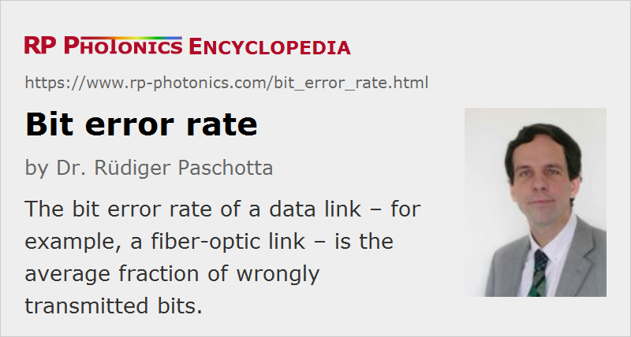

Bit Error Rate
Acronym: BER
Definition: average fraction of wrongly transmitted bits in a communication link
German: Bitfehlerrate
Category: lightwave communications
Units: (dimensionless)
How to cite the article; suggest additional literature
Author: Dr. Rüdiger Paschotta
Even a digital data transmission system is not totally error-free – statistical fluctuations related to noise influences cause a small percentage of the transmitted bits to be corrupted. The average fraction of incorrectly transmitted bits is called the bit error rate. The maximum capacity of a reliable data transmission system is not reached by keeping the bit error rate at an extremely low level (nearly avoiding any bit errors), but by pushing the data rate to a level where some tolerable bit error rate (typically between 10−12 and 10−9) can be maintained. A virtually error-free transmission can still be achieved by detecting and correcting most of the remaining bit errors, e.g. based on check sums. For example, detected bit errors may be corrected simply by resending the few affected data packages.
In practice, the bit error rate of a system for optical data transmission (e.g. a fiber-optic link) can be increased by noise influences (particularly in the receiver, but also in the transmitter and in amplifiers), by optical losses, and chromatic and other types of dispersion. Also, nonlinearities can cause signal distortion and channel cross-talk. Possible countermeasures include using a higher transmitted optical power, reducing fiber losses, employing fiber amplifiers and/or dispersion compensation in the link, using improved detectors (possibly with electronic dispersion compensation), optimizing the arrangement of wavelength channels in a wavelength division multiplexing system, or simply by reducing the data transmission rate.
Bit error rates are typically measured with complex devices, called bit error rate testers (BERT), generating a pseudo-random bit sequence and comparing the sent and received data.
Suppliers
The RP Photonics Buyer's Guide contains 7 suppliers for bit error rate testers.
Questions and Comments from Users
Here you can submit questions and comments. As far as they get accepted by the author, they will appear above this paragraph together with the author’s answer. The author will decide on acceptance based on certain criteria. Essentially, the issue must be of sufficiently broad interest.
Please do not enter personal data here; we would otherwise delete it soon. (See also our privacy declaration.) If you wish to receive personal feedback or consultancy from the author, please contact him e.g. via e-mail.
By submitting the information, you give your consent to the potential publication of your inputs on our website according to our rules. (If you later retract your consent, we will delete those inputs.) As your inputs are first reviewed by the author, they may be published with some delay.
See also: optical data transmission, optical fiber communications, electronic dispersion compensation
and other articles in the category lightwave communications
|  |
If you like this page, please share the link with your friends and colleagues, e.g. via social media:
These sharing buttons are implemented in a privacy-friendly way!